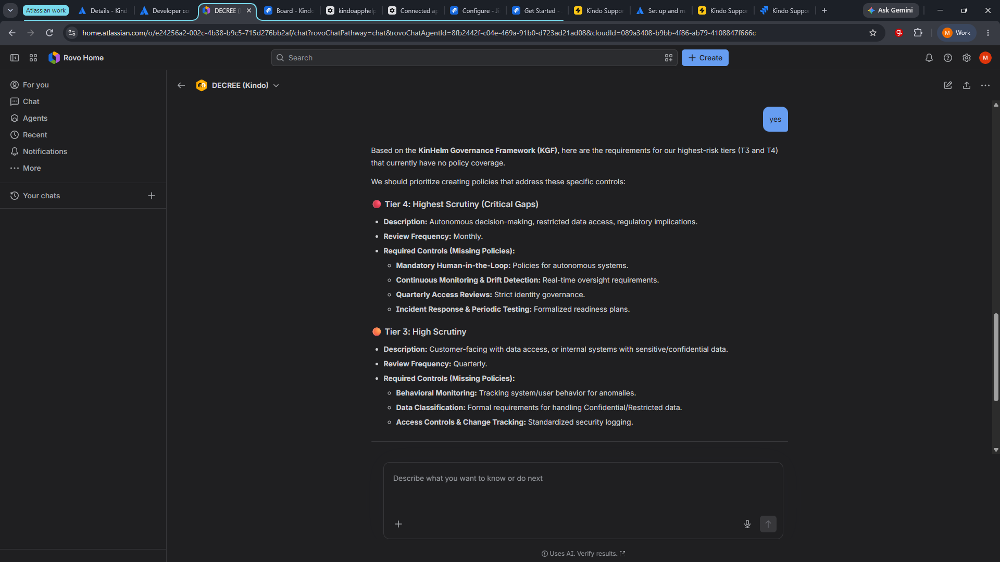

Kindo/Waldo — Setup & Walkthrough Guide
Overview
Kindo/Waldo is an AI-powered governance platform for Atlassian Jira. It helps organizations discover, classify, monitor, and report on their AI systems using the KGF-1 (KinHelm Governance Framework).
Five AI agents work together to manage every aspect of AI governance:
| Agent | Role | Description |
|---|---|---|
| Waldo | AI Governance Advisor | Framework guidance, discovery scanning, governance strategy |
| CENSUS | Component Registration | Discover, register, classify, and assign ownership of AI systems |
| EMBER | Trust Monitoring | Behavioral drift detection, trust scoring, anomaly alerting |
| DECREE | Policy & Access | Create policies, classify data sensitivity, manage access rules |
| VISTA | Reporting & Analytics | Governance dashboards, risk posture, board-ready reports |
Prerequisites
| Requirement | Details |
|---|---|
| Jira Cloud instance with Rovo enabled | Required for AI agent functionality |
| Site admin permissions | Required for initial install |
| Knowledge of your organization's AI tools, models, and systems | Needed for classification during component registration |
Step 1 — Install & Get Started
After installing Kindo/Waldo from the Atlassian Marketplace:
- Navigate to Jira Admin Settings → Manage Apps → Kindo/Waldo
- The Get Started page shows a 7-item setup checklist
Auto-completed on Install
Six items complete automatically when the app is installed:
| Checklist Item | Details |
|---|---|
| ✅ Discovery scan complete | Your Atlassian environment is scanned for Jira projects, Confluence spaces, and installed apps |
| ✅ GOV project created | A dedicated GOV project is created in your Jira instance for governance records |
| ✅ Governance framework applied | The KGF-1 (KinHelm Governance Framework) is configured with risk tiers, trust scoring, and data classifications |
| ✅ Components classified | Tracks classification progress (starts at 0/0 — complete until components are registered) |
| ✅ Component owners assigned | Tracks ownership assignment progress (starts at 0/0 — complete until components are registered) |
| ✅ Peer apps connected | Shows green in standalone mode. If other Kindo apps are installed, peer connections are detected automatically |
Requires Your Configuration
One item requires manual setup:
- ⚠️ Governance team assigned — Add members who will review governance decisions and approve risk classifications
Click “Configure App” to begin setup, or talk to Waldo — your AI governance advisor — for guided help.

Step 2 — Configure: Governance Team
Navigate to Configure → Team tab. Add team members who will oversee AI governance decisions.
For each member, enter:
| Field | Description |
|---|---|
| Atlassian Account ID | Their Jira account identifier |
| Display Name | How they appear in the app |
| Role | e.g., Admin, Reviewer, Auditor |
Click “Add Member” then “Save”. A green confirmation banner confirms the save was successful.
Step 3 — Configure: Additional Tabs
The Configure page includes additional tabs:
| Tab | Description |
|---|---|
| Risk Tiers | Define the four risk tiers (T1–T4) and their associated controls and review frequencies |
| Trust Scoring | Configure the 5-factor weighted trust model (Incident History, Compliance Posture, Behavioral Consistency, Review Recency, Control Coverage) |
| Framework | View and configure the KGF-1 governance framework settings |
| Discovery | Review discovery scan results and trigger rescans |
| Ecosystem | View connected Kindo peer apps. The app operates in standalone mode if no other Kindo apps are installed. Ecosystem features activate automatically when peers are detected. |
Accept the defaults for initial setup. These can be refined as your governance practice matures.

Step 4 — Verify Setup Progress
Return to the Get Started page to verify your progress. After configuring your governance team, all items should show green:
“All checks passed. Your governance platform is fully configured. All agents are ready.”
Setup Progress: 7 of 7 complete (100%)
Step 5 — Discover Your Environment with Waldo
Waldo is your AI governance advisor. Unlike a setup guide, Waldo understands the KGF-1 framework and helps you apply it to your specific environment.
- Open Rovo Chat (click “Ask Rovo” in the top navigation bar)
- Select Waldo (Kindo) from your available agents
- Ask Waldo to scan: “Scan my environment for AI components that need governance.”
Waldo runs a discovery scan and reports what it found — Jira projects, Confluence spaces, installed apps.
Waldo explains why discovery matters in the KGF-1 framework and outlines the three axes of classification:
| Axis | Description |
|---|---|
| Risk Tiering (T1–T4) | How much scrutiny each system needs |
| Risk Rating | The impact of a potential failure |
| Data Classification | What information the system handles |
Ask Waldo to explain the risk tiers: “How do the risk tiers apply to my components?”
Waldo presents the four-tier framework with descriptions, key controls, and review frequencies — contextualized to your environment, not abstract definitions.

Step 6 — Register Components with CENSUS
CENSUS is your component registration agent. It takes discovered items and formally registers them in the governance framework.
- Open Rovo Chat and select CENSUS (Kindo)
- Ask: “Help me register all discovered components.”
CENSUS identifies all unregistered components and suggests grouping by category:
- AI & Intelligent Agents (high priority — autonomy and data processing risks)
- External SaaS & Integrations (third-party data sharing)
- Core Infrastructure & Internal Systems
- Business Unit Service Desks & Automations
- Mobile & Specialized Tools
For each component, CENSUS collects:
| Field | Description |
|---|---|
| Component Type | ai_model, agent, automation, data_pipeline, saas_tool, internal_system |
| Owner | The Atlassian account ID of the responsible person |
| Description | What the component does |
| Data Access | What data the component can reach |
| Deployment Scope | internal, customer_facing, or both |
CENSUS registers the components, assigns advisory risk tier recommendations, and creates Jira issues in the GOV project (e.g., GOV-2, GOV-3, etc.).
Risk tier recommendations are advisory. A human member of the governance team must review and confirm the final tier.


Step 7 — Monitor Trust with EMBER
EMBER tracks the trustworthiness of your governed components using a weighted 5-factor model.
- Open Rovo Chat and select EMBER (Kindo)
- Ask: “What is the trust score for Slack?”
EMBER returns a full breakdown:
- Current Score (0–100)
- Trust Level (Trusted ≥80, Provisional, Probation, or Suspended)
- Risk Tier assignment
- Factor Analysis with individual scores, weights, and impact descriptions
5-Factor Trust Model
| Factor | Weight | Description |
|---|---|---|
| Incident History | 30% | Fewer/less severe incidents = higher score |
| Compliance Posture | 20% | Adherence to defined policies |
| Behavioral Consistency | 20% | Stability of behavior over time |
| Review Recency | 15% | How recently the component was reviewed |
| Control Coverage | 15% | Implementation of required controls for its tier |
EMBER identifies what's holding the score back and what actions would improve it.


Step 8 — Create Policies with DECREE
DECREE manages governance policies, data classification, and access rules.
- Open Rovo Chat and select DECREE (Kindo)
- Ask: “Create an access control policy for all components handling internal data.”
DECREE drafts the policy with:
- Name, Type, and Scope
- Requirements (e.g., MFA required, access restricted to authenticated employees, quarterly log review)
- Review Cycle (e.g., quarterly, with next review date)
- Owner assignment
Review and confirm the policy. DECREE creates a corresponding Jira issue in the GOV project (e.g., GOV-8) with:
[POLICY]summary prefix- Labels:
kindo-governance,policy,policy-access - Full requirements in the description
- Audit trail of creation and updates

Step 9 — Report to Leadership with VISTA
VISTA generates governance dashboards and board-ready reports.
- Open Rovo Chat and select VISTA (Kindo)
- Ask: “Generate a governance posture report for our board.”
VISTA generates an Executive Governance Posture Report including:
- Executive Summary — total governed components, average trust score, material incidents
- Risk Tier Distribution — breakdown by T1–T4 and unclassified
- Trust & Compliance Trends — tier performance, policy coverage, review status
- Incident Overview — total incidents and governance breaches
- Strategic Recommendations — actionable next steps based on current data (e.g., “52 unclassified components — primary focus should be completing classification”)
VISTA is a read-only agent. It reports on data and trends to help you make informed decisions, but it does not determine or change your governance posture.
Agent Reference
| Agent | Purpose | When to Use |
|---|---|---|
| Waldo | Governance advisor — teaches KGF-1, scans environment, explains risk tiers and classification | First point of contact. Start here when you're new to governance or need strategic guidance. |
| CENSUS | Registers and classifies components — bulk registration, risk tier recommendations, ownership assignment | When you need to add AI systems to the governance framework. |
| EMBER | Monitors trust — scoring, drift detection, anomaly alerts, decay tracking | When you need to check on a component's health or investigate behavioral changes. |
| DECREE | Manages policies — create/update policies, classify data sensitivity, access rules | When you need to establish or enforce governance rules. |
| VISTA | Reports — dashboards, posture reports, trend analysis, tier comparisons | When you need to report to leadership or track governance maturity over time. |
Key Design Principles
- All data stays in your Atlassian environment — Forge Storage and Jira issues. No external data storage.
- Governance-write decisions are human-only — agents recommend, humans confirm. Risk tiers, status changes, and clearance decisions require human approval.
- Three orthogonal governance axes — Risk Tier (T1–T4), Risk Rating (C/H/M/L), and Data Classification (Public/Internal/Confidential/Restricted) are independent. A T1 component can handle Restricted data.
- Advisory, not authoritative — CENSUS recommends risk tiers, EMBER calculates trust scores, DECREE drafts policies. All require human review and confirmation.
- Standalone by default, ecosystem-ready — works fully as a single app. When other Kindo apps (HR, Training, Compliance, Change, Legal) are installed, cross-app governance features activate automatically.
- Every governance action creates a Jira issue — component registrations, policies, evaluations, and incidents all live as
GOVproject issues for full audit trail.
Troubleshooting
| Issue | Solution |
|---|---|
| Get Started shows items as incomplete | Click “Refresh Checks”. If discovery or framework still show incomplete, try uninstalling and reinstalling the app. |
| Configure page is blank | Check browser console for errors. Ensure the app is deployed and upgraded to the latest version. |
| Agent not responding | Verify Rovo is enabled on your Jira site. Check that the agent appears in Browse Agents. |
| Discovery scan finds no components | Ensure your Jira site has at least one project. The scan looks for Jira projects, Confluence spaces, and installed apps. |
| Trust scores not updating | EMBER recalculates scores when trust events are logged. Check that events have been recorded for the component. |
| Peer apps not detected | Other Kindo apps must be installed on the same Jira site. The app works fully in standalone mode. |
| Waldo doesn't run the scan | Make sure you're asking Waldo to scan, not just asking about scanning. Try: “Scan my environment for AI components” |